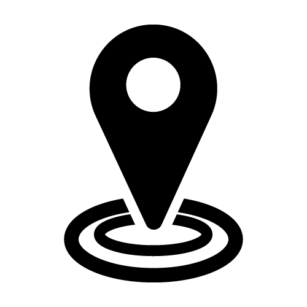

Raphael Leduc
438-820-9322
raphleduc17@gmail.com
 Boisbriand, Canada

Ingénieur en informatique
À propos de moi
J'ai présentement 17 ans et je suis actuellement en technique informatique. Mon objectif est de pouvoir gérer ma propre équipe pour des projets diverses
COMPÉTENCES
Professionnelles
- Visual Studio Code
- Wondershare Filmora
Personnelles
- concentration
- créativité
- flexible
- ouvert d'esprit
- passionné
LANGUES
- Français: parler, écrire, lire
- Anglais: parler, écrire, lire